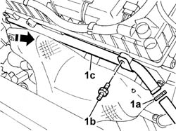
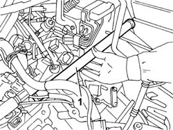
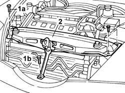
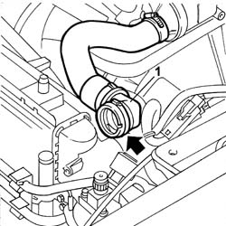
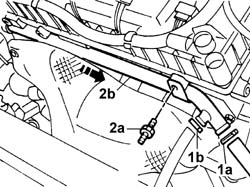

1088D24 RIGID PIPE for coolant inlet to water pump - R&R
- Path
- Procedures > 10 ENGINE > 1088 ENGINE COOLING > 1088D COOLANT HOSES AND PIPES > 1088D24 RIGID PIPE for coolant inlet to water pump - R&R
- Kind
- repair procedure (removal / refitting; the operation number is the code)
- Applies to
- engines: 2.0 TB, 2.4 20V, 3.0 V6, 3.2 V6; all production periods
- Interactive page
- https://sloeber94.github.io/elrnDB-lThss/en/#/75316
Applies to: engines: 2.4 20V; all production periods
 Removing
Removing
 Refitting
Refitting- Position the vehicle on a lift.
- Make sure that the ignition key is in the OFF position, then disconnect the negative battery terminal.
See in Op. 7055B54 PROTECTION/GUARD under engine - R.R.
See in Op. 1048A21 AIR INLET HOSE FROM INTAKE TO FILTER - R.R.
See in Op. 1048A23 Cold AIR INTAKE for air filter - R.R.
See in Op. 1016A40 Ignition COIL COVER on cylinder head - R.R.
1. Disconnect the band (1a), undo the bolt (1b) and extract the rigid engine coolant pipe (1c); collect the fluid in a suitable container.

Applies to: engines: 2.4 20V; all production periods
Refitting
Removing- Position the rigid coolant pipe in its housing.
- Tighten the rigid pipe fixing bolt.
- Connect the rigid pipe to the flexible hose using the band.
See in Op. 1016A40 Ignition COIL COVER on cylinder head - R.R.
See in Op. 1048A23 Cold AIR INTAKE for air filter - R.R.
See in Op. 1048A21 AIR INLET HOSE FROM INTAKE TO FILTER - R.R.
See in Op. 0010T20 Engine REFRIGERANT FLUID - Change
See in Op. 7055B54 PROTECTION/GUARD under engine - R.R.
- Connect the negative battery lead.
- Remove the vehicle from the lift.
Applies to: engines: 3.0 V6, 3.2 V6; all production periods
Removing
RefittingSee in Op. 4450B02 Left FRONT WHEEL (one) - R.R.
See in Op. 7055B42 FRONT WHEEL ARCH LINER (one), left or right - R.R.
See in Op. 7040D50 ENGINE COMPARTMENT UPPER SOUND INSULATION SHIELD - R.R.
See in Op. 1048A28 vacuum air circuit resonator pipe - r+r
See in Op. 1048A35 HOSE FROM FLOW METER TO RESONATOR - R.R.
See in Op. 1048A11 COMPLETE AIR FILTER -R.R.
See in Op. 1088C36 THERMOSTAT MOUNTING - R.R.
- [5505A27]
1. Extract the rigid pipe from its housing and release it via the wheel arch.

Applies to: engines: 3.0 V6, 3.2 V6; all production periods
Refitting
Removing- Replace the 4 O-rings at the ends of the pipe.
- Fit the water pump rigid inlet pipe, complete with O-rings, and check that it is correctly matched with the water pump cover.
- [5505A27]
See in Op. 1088C36 THERMOSTAT MOUNTING - R.R.
See in Op. 1048A11 COMPLETE AIR FILTER -R.R.
See in Op. 1048A35 HOSE FROM FLOW METER TO RESONATOR - R.R.
See in Op. 1048A28 vacuum air circuit resonator pipe - r+r
See in Op. 7040D50 ENGINE COMPARTMENT UPPER SOUND INSULATION SHIELD - R.R.
See in Op. 7055B42 FRONT WHEEL ARCH LINER (one), left or right - R.R.
Applies to: engines: 2.0 TB; all production periods
Removing
Refitting- Position the vehicle on a lift.
- Make sure that the ignition key is in the OFF position, then open the boot, remove the cover on the left hand side and disconnect the negative battery lead.
See in Op. 7055B54 PROTECTION/GUARD under engine - R.R.
See in Op. 1048A21 AIR INLET HOSE FROM INTAKE TO FILTER - R.R.
See in Op. 1048A23 Cold AIR INTAKE for air filter - R.R.
See in Op. 1016A40 Ignition COIL COVER on cylinder head - R.R.
1. Undo the fixing bolts (1a) and the lower bolt (1b) fastening the reinforcement bracket.
2. Move the upper crossmember forward.

Applies to: engines: 2.0 TB; all production periods
- Position a container under the vehicle to collect the coolant.
1. Disconnect the upper hose from the radiator (quick-release connector).

Applies to: engines: 2.0 TB; all production periods
1. Disconnect the connectors (1a) and (1b).
2. Unscrew bolt (2a) and remove rigid coolant pipe (2b).

Applies to: engines: 2.0 TB; all production periods
Refitting
Removing- Position the rigid coolant pipe in its housing.
- Tighten the rigid pipe fixing bolt.
- Connect the rigid pipe to both hoses using the band.
- Connect the upper hose from the radiator.
- Position the upper crossmember and tighten the fixing bolts.
See in Op. 1016A40 Ignition COIL COVER on cylinder head - R.R.
See in Op. 1048A23 Cold AIR INTAKE for air filter - R.R.
See in Op. 1048A21 AIR INLET HOSE FROM INTAKE TO FILTER - R.R.
See in Op. 0010T20 Engine REFRIGERANT FLUID - Change
See in Op. 7055B54 PROTECTION/GUARD under engine - R.R.
- Connect the negative battery lead.
- Remove the vehicle from the lift.
Topics linked from this page (12)
- 0010T20 Engine REFRIGERANT FLUID - Change
- 1016A40 Ignition COIL COVER on cylinder head - R.R.
- 1048A11 COMPLETE AIR FILTER -R.R.
- 1048A21 AIR INLET HOSE FROM INTAKE TO FILTER - R.R.
- 1048A23 Cold AIR INTAKE for air filter - R.R.
- 1048A28 vacuum air circuit resonator pipe - r+r
- 1048A35 HOSE FROM FLOW METER TO RESONATOR - R.R.
- 1088C36 THERMOSTAT MOUNTING - R.R.
- 4450B02 Left FRONT WHEEL (one) - R.R.
- 7040D50 ENGINE COMPARTMENT UPPER SOUND INSULATION SHIELD - R.R.
- 7055B42 FRONT WHEEL ARCH LINER (one), left or right - R.R.
- 7055B54 PROTECTION/GUARD under engine - R.R.